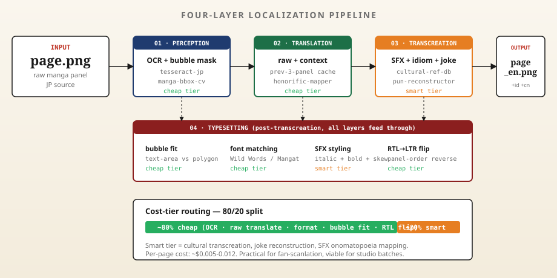

Concept stage · Pre-MVPTahap konsep · Pra-MVP概念阶段 · 预 MVP
Localize manga across languages — keep the bubbles, the SFX, and the joke.
Lokalisasi manga lintas bahasa — pertahankan bubble, SFX, dan punchline-nya.
跨语言本地化漫画 — 保留对话气泡、拟声词与笑点。
An autonomous agent that takes a raw manga, manhwa, or manhua page and returns it localized across JP/EN/ID/CN — speech bubbles re-typeset, sound effects restyled, idioms transcreated. Not just translation.
Agent otonom yang mengambil satu halaman manga, manhwa, atau manhua mentah, lalu mengembalikannya dalam JP/EN/ID/CN — bubble di-typeset ulang, SFX di-restyle, idiom di-transcreate. Bukan sekadar terjemahan.
01Why translation isn't enoughKenapa terjemahan biasa tidak cukup为何单纯翻译远远不够
Manga, manhwa, and manhua aren't text — they're text inside a visual grammar. Existing tools translate words; they don't preserve bubbles, SFX, panel order, honorifics, or the joke.
Manga, manhwa, dan manhua bukan teks polos — mereka teks di dalam tata visual. Tools yang ada menerjemah kata saja; tidak menjaga bubble, SFX, urutan panel, honorific, atau punchline.
Each page passes through perception, translation, transcreation, and typesetting. Layers are decoupled so a fan scanlator can swap their own OCR or font matcher without rewriting the agent.
Tiap halaman melewati persepsi, terjemahan, transcreate, lalu typesetting. Lapis-lapis ini terpisah supaya scanlator bisa ganti OCR atau font matcher sendiri tanpa rewrite agent.
Translate per bubble dengan konteks 3 panel terakhir
Cache profil karakter (nama, ciri bicara)
Mapping honorific per bahasa target
Register gaya (formal / kasual / dialek)
结合前 3 格上下文逐气泡翻译
角色档案缓存（姓名、口癖）
按目标语言映射敬称
风格语域（正式 / 口语 / 方言）
llm-translatecharacter-cachehonorific-rules
03 · TRANSCREATION
Adapt the joke
Adaptasi punchline
笑点本地化
SFX onomatopoeia mapping per language
Idiom transcreation (not literal)
Kanji-pun → equivalent target-lang pun
Cultural reference: keep, swap, or footnote
Mapping onomatope SFX per bahasa
Transcreate idiom (bukan harfiah)
Pun berbasis kanji → padanan pun bahasa target
Referensi budaya: pertahankan, ganti, atau footnote
各语言拟声词映射
习语创译（非直译）
汉字双关 → 目标语言对应双关
文化参照：保留、替换或加注
sfx-mapperidiom-dbpun-reconstructor
04 · TYPESETTING
Fit the page
Pas-kan halaman
适配排版
Bubble fit (text area vs polygon)
Font matching (Wild Words / Mangat / Anime Ace)
SFX styling (italic + bold + skew)
RTL→LTR panel-order flip if needed
Bubble fit (luas teks vs polygon)
Pencocokan font (Wild Words / Mangat / Anime Ace)
Styling SFX (italic + bold + skew)
Flip urutan panel RTL→LTR jika perlu
气泡适配（文本面积 vs 多边形）
字型匹配（Wild Words / Mangat / Anime Ace）
拟声词风格（斜体 + 粗体 + 倾斜）
必要时翻转阅读顺序（RTL→LTR）
bubble-fitfont-poolsfx-stylerorder-flipper
03Cost-tier routingCost-tier routing分级成本路由
Most of the work — OCR, raw translate, format, bubble fit, RTL flip — belongs on a small fast cheap model. Only the cultural transcreation and SFX onomatopoeia mapping need a smart tier. ~80/20 split keeps per-page cost in low-cent range.
Sebagian besar pekerjaan — OCR, translate mentah, format, bubble fit, flip RTL — cocok di model kecil cepat murah. Hanya transcreate budaya dan SFX yang butuh tier pintar. Split ~80/20 jaga biaya per halaman di kisaran sen rendah.
Pipeline runs as four loosely-coupled layers, each replaceable. Bring your own OCR, your own LLM, your own font pool.
Pipeline jalan sebagai empat lapis yang loose-coupled, masing-masing bisa diganti. Bawa OCR sendiri, LLM sendiri, font pool sendiri.
流程为四层松耦合架构，每一层均可替换。可自带 OCR、LLM、字型库。

05What's intentionally not in scopeYang sengaja tidak masuk scope明确不纳入范围
Pirate scanlation pipeline. The agent is a tool, not a distribution platform. Source rights stay with the publisher.
Voice acting / dub generation. Out of scope — manga is a print medium first.
Auto-coloring of black-and-white pages. Color is artistic intent, not a localization decision.
End-to-end studio replacement. A human translator is still in the loop on smart-tier output.
Pipeline scanlation bajakan. Agent ini alat, bukan platform distribusi. Hak sumber tetap milik penerbit.
Voice acting / dub. Di luar scope — manga adalah medium cetak.
Pewarnaan otomatis halaman hitam-putih. Warna adalah niat artistik, bukan keputusan lokalisasi.
Mengganti studio penuh. Penerjemah manusia tetap di loop untuk output smart-tier.
盗版汉化分发管道。本代理是工具，不是分发平台。版权归出版方。
配音 / 配音生成。不在范围 — 漫画首先是印刷媒介。
黑白页自动上色。色彩属艺术决定，非本地化决定。
完全替代工作室。智能层输出仍需人工译者把关。
06Biggest open riskRisiko terbuka terbesar最大未解风险
SFX onomatopoeia is a creative bottleneck. A literal どきどき → "doki doki" satisfies fans of Japanese conventions but breaks for general EN/ID/CN readers. We treat the SFX mapper as a tunable artistic policy — fan scanlator vs licensed studio choose differently. Not a "solve once" problem.
SFX onomatope adalah bottleneck kreatif. どきどき → "doki doki" harfiah memuaskan fans konvensi Jepang tapi gagal untuk pembaca umum EN/ID/CN. SFX mapper kami perlakukan sebagai kebijakan artistik yang bisa di-tune — scanlator fan vs studio lisensi pilih beda. Bukan masalah "selesai sekali".